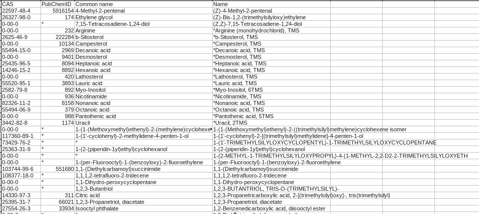

The algorithm opens a file which should contain the pubChem ID of different compounds and assigns each ID to the correspondent compound in the peak list.
The file can have also other information like CAS number or common name that will be also assing to the correspondent compound.
These files should contain these columns:
